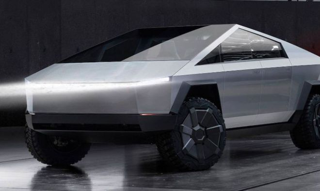
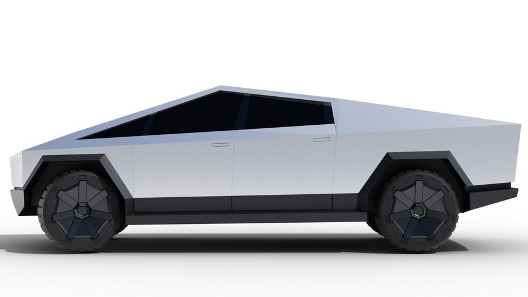

Navigation
All Bookmarks
 South Korean firm wins $300 million Tesla Cybertruck parts
supply contract
South Korean firm wins $300 million Tesla Cybertruck parts
supply contract

driveteslacanada.ca
South Korean firm wins $300 millon Tesla Cybertruck parts supply which is a good ...
Tesla is getting closer and closer to the start if Cybertruck production, and when it does
some of the parts will go into a very good step of the process. More news please like...

teslarati.com
Tesla Cybertruck production teased in $227M+ order for parts
Tesla ordered Cybertruck parts worth more than $227 million from south Korean
company Seoyon E-Hwa. The news teased the start of Cybertruck production ...